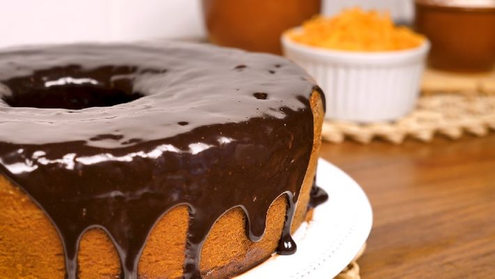

BOLOS E TORTAS | CARNES | AVES | PEIXES | SALADAS | SOPAS
Tudo Gostoso - Bolos - Bolo de cenoura

Em um liquidificador, adicione a cenoura, os ovos e o óleo, depois misture
Acrescente o açúcar e bata novamente por 5 minutos
Em uma tigela ou na batedeira, adicione a farinha de trigo e depois misture novamente
Acrescente o fermento e misture lentamente com uma colher
Asse em um forno preaquecido a 180 C por aproximadamente 40 minutos
Despeje em uma tigela a manteiga, o chocolate em pó e o açúcar, depois misture
Leve a mistura ao fogo e continue misturando até obterumas consistência cremosa, depois
despeje a calda por cima do bolo.